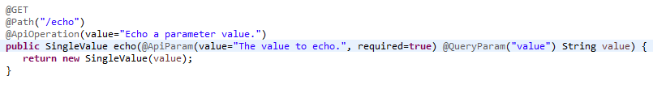

MediaCloud Development
Foundations, Features, and Frameworks
Let's Get Started!
This presentation's goal is to outline core concepts, tools, and expectations for Media Cloud Developers
( that means you )
INTRO
MediaFusion LITE (MFL) is a framework for developing and deploying RESTful services
FOUNDATION
The MFL architecture is designed for rapid development, ease of maintenance, scalable deployment, and performance.
FOUNDATION
These high level goals have driven a very focused set of features.
EASY TO SETUP
MFL can be pulled from source control and immediately worked on. No complex setup, no property file magic.
EASY TO BUILD
MFL leverages centralized dependency management, creating repeatable builds and allowing for easy upgrade and downgrade of dependencies.
EASY TO DEVELOP
Creating a new service method can be done in just a few lines of code.

EASY TO DOCUMENT
Documentation is source code, and exists directly within the implementation of a service.
EASY TO TEST
MFL automatically generates test client libraries, to support rapid creation of real-world integration tests.
EASY TO DEPLOY
Deploy with a single jar. Add a new service to a deployment by adding the service to the classpath and restarting.
EASY TO CONFIGURE
Favor simplicity of configuration, and expose configuration only when the likelihood of later configuration is high. Always provide sensible defaults.
AND MORE...
There's a lot to cover, so let's start looking into MFL's architecture.
INTRO
MFL does NOT run inside of an application container such as Tomcat
WHY??
Application server's are configuration intensive
, HEAVYWEIGHT
, PermGen destroying
, Classpath mangling,
MONSTROSITIES
, with arcane deployment procedures
, and hidden log files.
Problems aside, there is simply limited value to be gained from using a web container.
INTRO
MFL instead uses best of breed server side components to create a single-purposed REST server architecture.
INTRO
The foundation of this architecture is Dropwizard, a framework that provides basic wiring between components for HTTP, REST, Dependency Injection, Monitoring, etc.
HTTP
MFL uses
Jetty to instantiate an HTTP server, and to process HTTP, WebSocket, and SPDY protocols.
REST
MFL uses
Jersey's implementation of JAX-RS to support the development of RESTful web services.
JSON
MFL request and response data is expressed in JSON. MFL uses
Jackson to facilitate mapping of objects to and from JSON.
GUICE
MFL is integrated with Google's
Guice to provide its dependency injection architecture.
PREREQ
The MFL development environment is designed to be easy to set up, but there are a few things you'll need. If you already have Eclipse, JDK 8, and Maven,
skip ahead.PREREQ
To start, you'll need one of these things:
PREREQ
MFL uses Java 8, so you need to be sure you have installed
JDK SE 8 from sun
PREREQ
Update eclipse to use Java 8. (Also check the box to store information about method parameters)
PREREQ
Configure your Eclipse workspace with your install of maven. Restart Eclipse afterward if it was running.
mvn -Declipse.workspace=<path-to-workspace> eclipse:add-maven-repo
OPTIONAL
Install the
JSONView chrome plugin for much more readable JSON output on chrome.
IMPORT
Import the MFL project into Eclipse, naming the new project mfl
RUN
Run the MediaFusionLite launch configuration from Eclipse
VICTORY
You are ready to solve the world's media problems. Let's find out how!
WTF
“C'mon bro, you said I could code now!”
Hold on to your dangling pointer there, speedracer. You've still got lots to learn before you touch this code. And the best place to start is to look at what other people have done using the Api Reference.
API REFERENCE
MFL uses source code as documentation, and generates a full featured web application that allows you to explore deployed services. This is the Api Reference.
@Path("/system")
@Produces(MediaType.APPLICATION_JSON)
@Api(value = "/system", description =
"Provides run-time information about this server, " +
"including uptime, deployed services, and more.")
public class SystemResource {
@GET
@Path("/echo")
@ApiOperation(value="Echo a parameter value.")
public SingleValue echo(
@ApiParam(value="The value to echo.", required=true)
@QueryParam("value") String value) {
return new SingleValue(value);
}
- Documentation is automatically generated using code.
- JAX-RS annotations, such as @GET, @Path, @Produces are interpreted.
- That information is supplemented with descriptive annotations like @Api and @ApiOperation
This screenshot shows the docs generated from the previous example (along with additional methods)
API REFERENCE
Go ahead and spend some time exploring the
Api Reference. (Make sure you start your MFL server first)